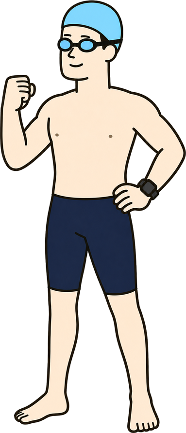
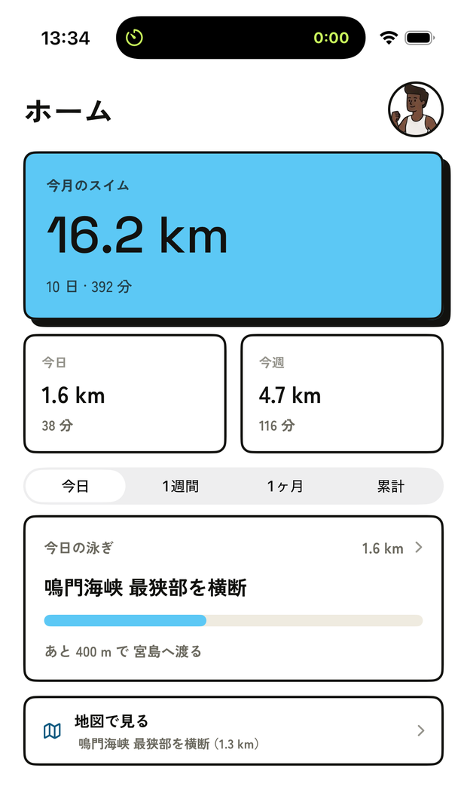
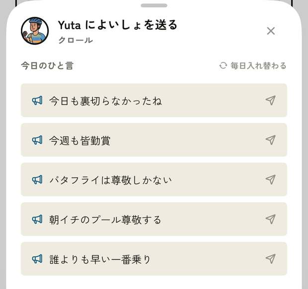

距離を入れるだけ。1本ずつ足していって、その日ぶんをまとめて振り返ります。仲間に見せるかどうかは、自分で決められます。一人でも使えて、仲間はあとから招けます。

01 — WHAT IT DOES
濡れた手で長く触らずに済むように、入れるものを減らしています。
要るのは距離だけ。時間は任意です。時計を見ずに泳ぐ日でも、1本も残せないということになりません。泳法はクロール・平泳ぎ・背泳ぎ・バタフライの4つから選びます。
1日に何本も泳ぐので、「セットを追加」で1本ずつ入れていきます。最後に「今日の記録を終了」を押すと、その日ぶんをまとめて振り返れます。
1.6 km は「鳴門海峡の最狭部を横断」。実在の海峡・川幅・橋の長さに換算して、押したときだけ地図で場所を見られます。
仲間の記録には「よいしょ」を送れます。しばらく泳いでいない仲間には「がんば」。届くのはこの2つだけで、数は誰にも見えません。

増やさないと決めているものも、同じくらい大事にしています。
他人と距離で競う仕組みは置きません。伸びたかどうかは自分の過去とだけ比べます。
知らない人とつながる経路がありません。おすすめ表示も公開タイムラインもありません。
数が誰かの目に触れることはありません。何回押されたかを競う画面を作りません。
02 — HOW FAR
「1,600 m 泳いだ」だけでは、遠いのか近いのか分かりません。実在の場所に置き換えて、届いた1つと次の1つを並べます。
距離の出どころは公表資料に当たって確かめたものだけを載せています。橋のように「橋長」と「中央支間長」で数字が変わるものは、どちらの定義かを持たせています。
03 — CHEER
通知が飛ぶのは「よいしょ」と「がんば」だけ。7日泳いでいない仲間には、その日の5つのひと言から選んで送れます。

04 — YOUR CALL
セットを追加しただけでは仲間に出ません。その日ぶんのサマリーで「仲間に投稿する」を押したときだけ公開されます。投稿せずに記録だけ残すこともできます。
仲間になる前の投稿は、あとから仲間になった相手には表示されません。承認した瞬間に、過去の記録がさかのぼって見られることはありません。
05 — CLOSED CIRCLE
ユーザー検索もおすすめの仲間も作りません。仲間になる方法は2つだけ。
06 — HEALTH
Apple ヘルスケアに残っている水泳を、直近14日ぶんまで取り込めます。
既定は無効です。プロフィールの「ヘルスケア連携」を入れて、初めて許可を求めます。読むのは水泳だけで、体重も心拍も読みません。
取り込んだ記録が勝手に仲間へ出ることはありません。同じ回が二度入ることもありません。
かかりません。記録・履歴・推移・仲間の機能をすべて無料で使えます。広告も入れません。記録できる本数や日数に上限はありません。
同じアカウントで動く別のアプリです。両方入れると、筋トレの投稿も水泳の投稿も同じ仲間に届きます。片方だけでも使えます。
使えます。一人で記録するだけで完結します。仲間は招待QRか招待コードで、あとから招けます。アプリの中に知らない人を探す機能はありません。
できます。要るのは距離だけで、時間は任意です。入れた日だけ 100m あたりのペースが出ます。
設定しません。泳いだ距離をそのまま入れます。入力の手数を増やさないためです。
できます。記録画面の日付を前後に動かすか、履歴からその日を開いて入れられます。
見られません。承認した相互フォローの仲間以外には表示されません。ユーザー検索機能そのものがありません。